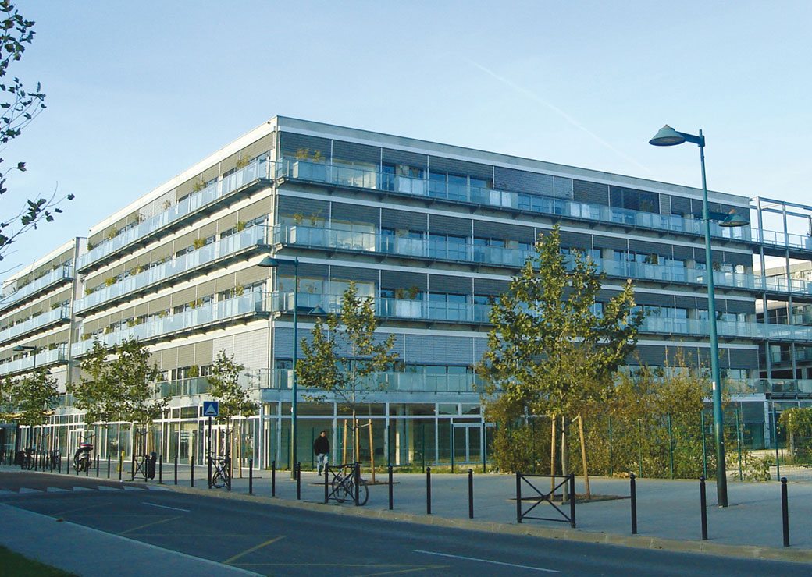
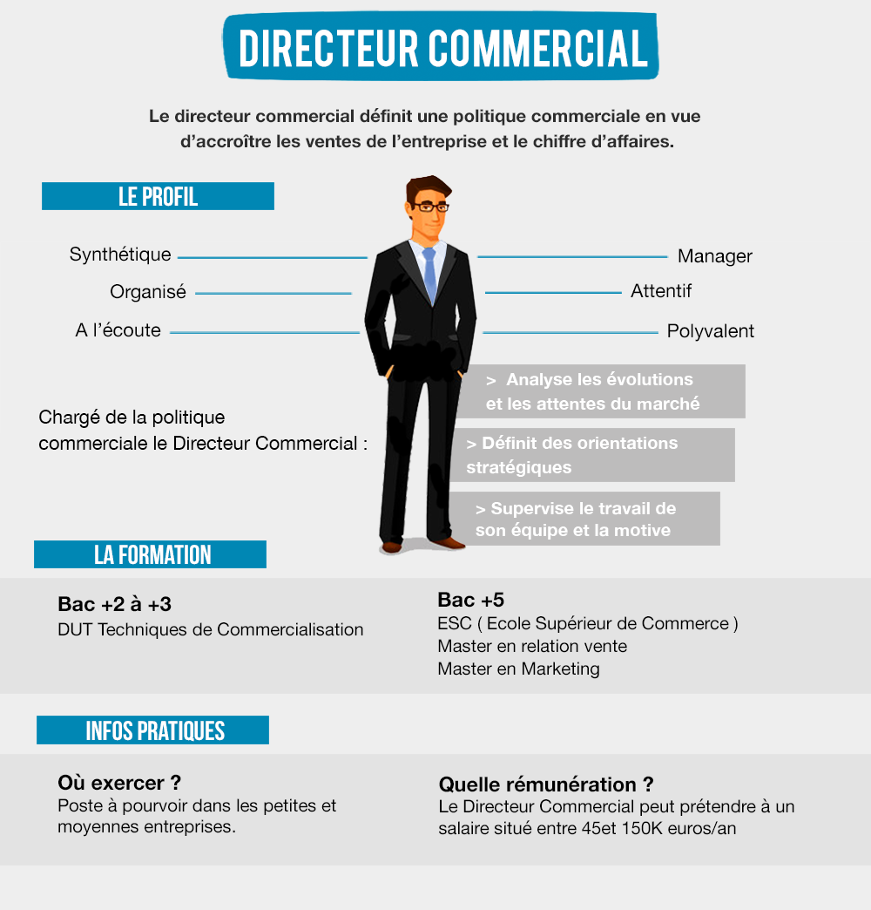

1-Mon Orientation
Mathématiques,SES,NSI en 1ère
Mathématiques, SES en terminale
2-Mes futures études
BUT Techniques de commercialisation: IUT de Bordeaux (Bac +3)
Ecoles supérieur de commerces: Kedge, Bordeaux (Bac +5)
Master en relation vente ou Master en Marketing
IUT de Bordeaux

Ecole de commerces Kedge

3-Mon futur métier
Directeur commercial
